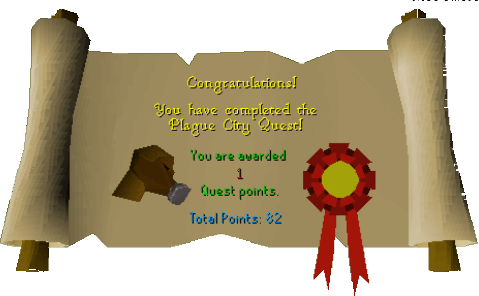

Plague City
Description: A shadow of disease has overcast Ardounge. Edmond's daugher Elena has gone missing in West Ardougne whilst trying to help the plague victims there. See if you can find out what's going on.Difficulty: Novice
Length: Medium
Items & Skills Needed:
Reward: 1 Quest point, 2,425 Mining XP, Ardougne teleport scroll, reading it unlocks the Ardougne Teleport with 51 Magic
Instructions:
Talk to Edmond. He will tell you about his daughter who has gone to West Ardougne to investigate the plague. He will ask you to talk to his wife.
His wife, Alrena, will tell you about the city and explain that you'll need a mask to get in. She will make you a mask if you have any dwellberries. If you have the dwellberries, talk to her again and she will give you a mask. She will tell you about her husband who is digging the garden and ask you to help him. Before talking to Edmond, get the picture of Elena which is inside the house on the table.
The garden is just west of the house. Talk to Edmond, and he'll say that you need to pour water on the soil. Use 4 buckets of water on the Mud patch and use the spade on the mud patch. You and Edmond will fall into the sewer.
Walk southwest and you will find a Sewer Pipe. Use a rope on it and talk to Edmond. He will say that you will have to go alone. Wear your gas mask then search the pipe.
You are now in West Ardougne. Find a citizen named Jethick. Talk to him and say you are looking for Elena. (Make sure you have Elena's picture in your inventory.) He'll say that Elena is helping the people in the city. He will also ask you to return a book for him.
Head north and you will find a house. Try to open the door. They won't let you in at first, but once they see the book, they'll allow you inside.
Talk to the people inside and you will know that Elena has been kidnapped. One of them asks you to go up the stairs and talk to Milli.
Go upstairs and talk to Milli. She'll tell you that Elena is in a building in the southeast corner of the city.
After you find the building (the door of the building has boarded-up and it has two doors), try to open the west door, and the mourner will say the house has been touched by the plague. Tell him that a girl named Elena is inside, and ask how to get in.
Head a bit north and you will see a huge house. Open the door and talk to Clerk. Tell him that it's urgent. He'll allow you to speak with Bravek. (Bravek must be at least 7 blocks close to the player for him to repspond, wait until he's close by before having the Clerk call for him)
Open the door and talk to Bravek. He will say that he has a headache. Ask him about the cure and he will give you a scruffy note. It reads:
Get a bucket of milk,
Then grind some chocolate
With a pestle and mortar
Add the grind chocolate to the milk
Finally add some snape grass
Get a bucket of milk,
Then grind some chocolate
With a pestle and mortar
Add the grind chocolate to the milk
Finally add some snape grass
If you have read the Items/Skills Needed To Start: You should have all the ingredients. Follow the steps to make the hangover cure: grind a chocolate bar with a pestle and mortar, add the chocolate dust to the milk, then add the snape grass to the chocolate milk. Talk to Bravek after you've made the hangover cure. His headache will be cured. Tell him that the Mourner won't listen to you. He will give you a warrant.
Go back to the house and try to open the door again. The mourner will say he needs to ask the Head Mourner, but when the message "You wait until the mourner's back is turned" appears, open the door immediately to sneak inside.
Walk down the spooky stairs and try to open the door. Elena will tell you the key is somewhere nearby. Go back upstairs and search the barrel, you will find a small key. Go back downstairs, use the key on the door, and talk to Elena. She'll tell you her father will reward you.
Go back to the dungeon and talk to Edmond, he will say thank you and reward you.
Congratulations, Quest Complete!

This quest guide was written by Henry-X. Thanks to Weezy, Mighty Red ,Biogenecis, MrStormy, Rune Dragon018, Stormer, and storm007 for corrections.
This quest guide was entered into the database on Mon, Feb 09, 2004, at 02:25:21 PM by Chownuggs and CJH and was last updated on Mon, Aug 02, 2004, at 08:33:22 AM.